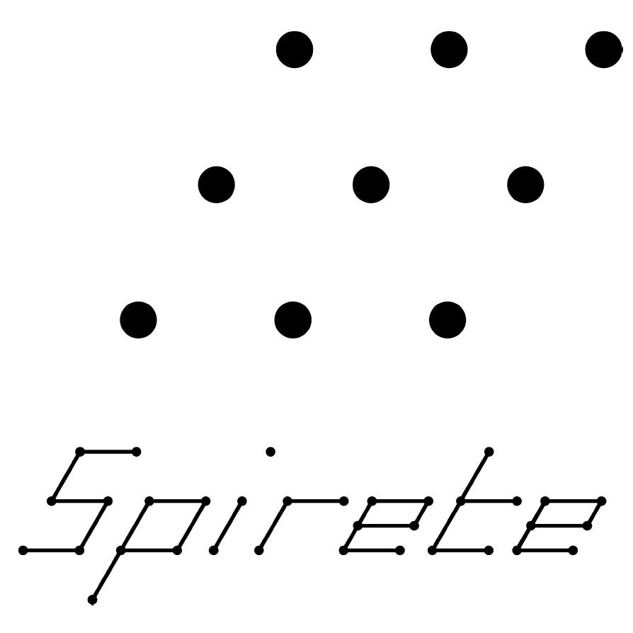
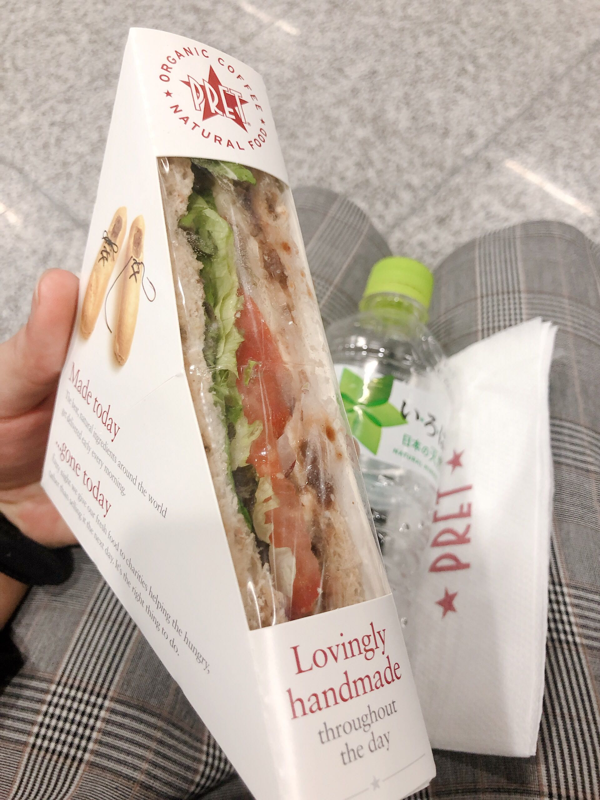
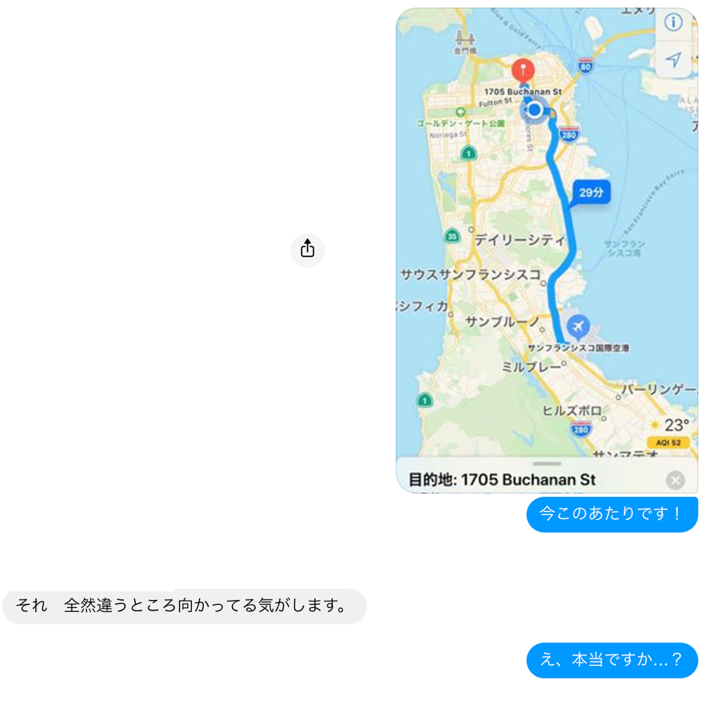

SF day.1 Departure for SF
Posted on Mon, 21 Oct 2019 in travel
Introduction
From October 21 to 26, I was in San Francisco as an intern of the 2 companies, "15th Rock Ventures", and "Spirete". Let me introduce little bit about the two companies.
| 15th Rock Ventures | Spirete |
|---|---|
|  | |
| VC fund | Startup Studio |
| "15th Rock Ventures" is a fund investing early stage startups in Japan, and abroad. It's investment theme is "Human Augmentation", in other word, the technology that enables humans to lead a healthy and enjoyable life for a long time. Now that we are in an era of 100 years lifespan, so it may be boring if we could do only very limited things. That's why it invests the theme to create a world that we can acquire various skills and increases life options by combining multiple elemental technologies such as AI, robotics, electronics, AR/VR, brain machine interface, etc. | "Spirete" is a Startup Studio designed to leverage buried talents & seed technologies in Japanese large corporations to create disrupting startups from scratch. There are many excellent engineers in Japanese large corporations, but they are not willing to leave the company, and become a manager. It wastes their technical skills, so "Spirete" supply the opportunities to enter in the startup world by adopting a Japanese-style system of temporary employment. |
"15th Rock Ventures"(VC fund) invests and supply some network with entrepreneurs to "Spirete"(Startup Studio), and "Spirete" supply some network with major corporations to "15th Rock Ventures".
I'm very interested in Human Augmentation, and have a knowledge of biology. (one aspect of Human Augmentation) In addition, I want to study abroad after graduating. For these reasons, I participated in their business trip.
A lots of "my first time"
It was a first time for me to
- get on an airplane alone. (As I participated in Softbank AI Hackathon, I departed one day late.)
- change plane (transit).
- get ESTA.
- go to America since I got my heart.
- use my own credit card.
But, I had "unfounded confidence". This negligence caused various tragedy...
At HND
非常に楽しい旅になりそうである。（6:30離陸） pic.twitter.com/Bx1WiymOYG
— しゅーと (@cabernet_rock) October 20, 2019
Oh my... After I arrive at SFO, I have to ride on the Uber, and contact with the members. I need WiFi or Sim card.
At 4 am, I found Messiah, Imoto no WiFI. It opened at around 4 am. I rushed into the shop, and signed the contract. The last thing I have to do is only pay by credit card. However, it was a problem. My limit of the credit card was only 100,000 yen, and the total price of flight tickets was 96,770 yen.
I boarded the plane with no WiFi and useless credit card.
Transit at HKG
I arrived at HKG noon, then I bought the lunch. I asked whether I could use US dollars in English, but the shopper can speak only Chinese, so I wanted to say "我不会说汉语 (Wǒ bù huì shuō hàn yǔ)", but I said "Wǒ don't shuō ...". She laughed at me and I was very embarrassed.

Arrived at SFO
After arrived at SFO, I immediately bought the pocket WiFi, then ride on a taxi to the meeting, but as I was impatient, I missed the destination.

After all, I returned SFO. It was a 80-dollar 40-minute sightseeing tour :(
Dinner
I had a dinner with John H. Kispert, one of the advisers of the spirete. He is an experienced investor and recognized leader in Silicon Valley with a demonstrated history of recapitalizing and monetizing public and private companies. He was very kind, and friendly to us and talk about some Japanese stuff, for example, Olympics, typhoon, the relationship between America and Japan. It was a very nice time and I thought I was happy to spend the first night in America with such a gentleman like him.
Back to Home
After the dinner, we went to the supermarket to buy some stuffs, then back to home. It was a very exciting and intense day. I'm really looking forward to tomorrow!!